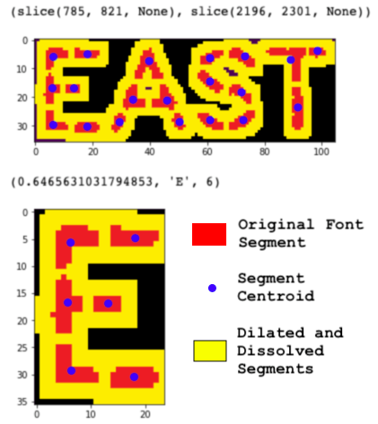

Using the dilated features as a 'mask', select original image glyphs and infer the letter
import math
import pickle
import numpy as np
from PIL import Image
from scipy import ndimage
from sklearn import svm
import matplotlib.pyplot as plt
from IPython.display import clear_output
with open('./model/02_SegmentPolarSVC_clean.pickle', 'rb') as handle:
svc = pickle.load(handle)
def import_image(filename):
'''
Read an image file from disk, convert it to a numpy array and label groups.
Assumes that the images are single band grey scale.
'''
drawing = Image.open(filename)
# convert the PIL image to an numpy array
drawer = np.array(drawing)
# invert the image for processing
drawed = np.logical_not(drawer)
# label each of the adjacent pixels
labels, count = ndimage.label(drawed)
print(count) # how many regions?
return labels, count, drawed
# image prior to dilation
pre_dil_labels, pre_dil_count, pre_dil = import_image('./data/output/00_66428_for_clipping.png')
# image with dilated features
post_dil_labels, post_dil_count, post_dil = import_image('./data/output/06_66428_dilated.png')
4892
86
# determine the centroid of each segment for the original file
centroids = ndimage.measurements.center_of_mass(pre_dil_labels, pre_dil_labels, range(1, pre_dil_count + 1))
# create a zero ndarray for the centroid labels
centroid_labels = np.zeros(pre_dil.shape, dtype=np.int32)
# assign the label from the dilated image to the pre-dilated centroid
for x, y in [np.rint(coord).astype(int) for coord in centroids]:
centroid_labels[x, y] = post_dil_labels[x, y]
def cart2pol_sorted_y(vertices):
'''Convert the cartesian coordinates to polar angles (phi).
This method assumes that the vertices are sorted on the Y-axis'''
x_min = vertices[:, 0].min()
y_min = vertices[:, 1][0]
x_max = vertices[:, 0].max()
y_max = vertices[:, 1][-1]
x_avg = (x_min + x_max) / 2
y_avg = (y_min + y_max) / 2
# recenter the centroids
vertices = [[i[0] - x_avg, i[1] - y_avg] for i in vertices]
# calculate angle as degrees +/-180
phi = [math.degrees(np.arctan2(i[1], i[0])) for i in vertices]
return np.sort(np.array(phi))
# loop through each label and determine the number of centroids in it
total_labels = post_dil_count # this might increment when glyphs are split
current_label = 1
min_centroid_count = 3 # every glyph has at least N centroids
max_svm_features = 7 # maximum number of modeled features in SVM
predictions = [] # list of all the predictions
while current_label <= total_labels:
# total number of centroids for the current label
label_centroid_count = np.sum(centroid_labels==current_label)
# if there are less than the minimum required centroids then skip this label
if label_centroid_count < min_centroid_count:
current_label += 1
continue
# get an array of centroids for the current label
label_centroids = np.nonzero(centroid_labels==current_label)
# the slices that define the post-dilation label
loc = ndimage.find_objects(post_dil_labels==current_label)[0]
# display yhe slice for reference
display(loc)
# create an image that overlays the pre-dilation letter over the post-dilation image mask
overlay_image = post_dil_labels[loc]
pre_dil_loc = pre_dil[loc]
overlay_image[pre_dil_loc==1] = 1
plt.imshow(overlay_image)
plt.show()
# prepare the centroid array for sorting along the Y axis
label_centroids_T = np.array(label_centroids).T
sorted_centroids = label_centroids_T[label_centroids_T[:,1].argsort()]
# determine how many features (aka phi) to process, lesser-of centroid count or max features
min_centroid_features = min([sorted_centroids.shape[0], max_svm_features]) + 1
# a list to store tuples of metadata for each iteration
scores = []
# continually enlarge the list of features and score them
for i in range(min_centroid_count, min_centroid_features):
# convert the cartesian coordinates to angles (phi)
phi = cart2pol_sorted_y(sorted_centroids[:i])
# if necesary, extend the array to maximum feature count
phi = np.concatenate((phi, np.zeros(max_svm_features - phi.size)))
predict = (
svc.predict_proba(phi.reshape(1,-1)).max(), # score
svc.predict(phi.reshape(1,-1))[0], # prediction
i) # i-th centroid
scores.append(predict)
# get the best prediction
best = sorted(scores)[-1]
# print the best score, the infered letter, and the number of segments
print(best)
# increment the label numbers when best[2] < min_centroid_features - 1
# basically, a label is being split into two new glyphs so need to insert it into the
# array of glyphs
if best[2] < sorted_centroids.shape[0] - 1:
# remember which centroid we're processing
i = best[2]
# increment the labels that haven't been processed yet
centroid_labels[centroid_labels > current_label] += 1
post_dil_labels[post_dil_labels > current_label] += 1
# increment the total number of labels since we just added one
total_labels += 1
# split the image at the i-th centroid
y1 = sorted_centroids[i-1][1]
y2 = sorted_centroids[i][1]
# calculate the Y axis mid-point
y_hat = np.rint((y1 + y2) / 2).astype(int)
if y_hat == y1:
y_hat += 1
# create the new slice for the split label
loc = (loc[0], slice(y_hat, loc[1].stop, None))
# increment the current label and zero-out what's remaining (so it doesn't get reprecessed)
centroid_labels[loc] = np.where(centroid_labels[loc] == current_label, current_label + 1, 0)
post_dil_labels[loc] = np.where(post_dil_labels[loc] == current_label, current_label + 1, 0)
loc = ndimage.find_objects(post_dil_labels==current_label)[0]
# create a clipped image that overlays the pre-dilation letter over the post-dilation image
best_image = post_dil_labels[loc]
pre_dil_loc = pre_dil[loc]
best_image[pre_dil_loc==1] = 1
plt.imshow(best_image)
plt.show()
else:
# no splitting required, set the image to display
best_image = overlay_image
# increment the current label for the next round of processing
current_label += 1
# but first, get some feedback on how well the model infered the letter
key = input()
if key == 'q':
break
# keys are: {'': 'good assignment', 'c': 'crap, bounding box error', 'b': 'bad SVM assignment'}
predictions.append([best, best_image, key])
clear_output()

The Green boxes are attempts and Red are success.